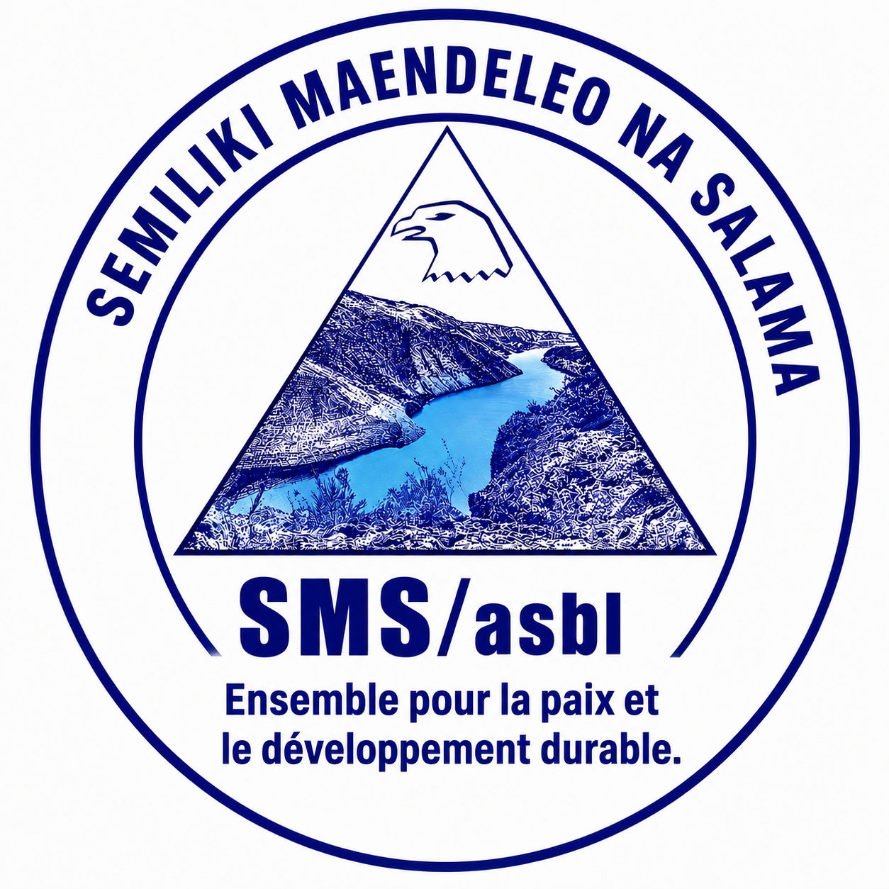

SMS ASBL — SEMILIKI DÉVELOPPEMENT ET PAIX
Ensemble pour la paix et le développement durable.
Agir ensemble pour la paix, la solidarité et le développement.
Découvrir notre organisationSEMILIKI MAENDELEO NA SALAMA (SMS ASBL) est une organisation engagée dans le développement et la promotion de la paix au sein des communautés.
Notre vision : des communautés pacifiques, solidaires et capables de se développer durablement.
Protection des droits de l’enfant, prévention des violences, exploitation et abus. Intégration transversale de la prévention et de la réponse aux violences basées sur le genre, notamment celles touchant les femmes et les filles.
English: Child protection and prevention of gender-based violence (GBV), including the protection of children's rights and prevention of abuse, exploitation and violence against women and girls.
Promotion du dialogue communautaire, prévention et résolution pacifique des conflits, coexistence pacifique et participation des femmes et des jeunes aux initiatives de paix et de sécurité.
English: Promoting community dialogue, peaceful conflict resolution, social cohesion, and the participation of women and young people in peace and security initiatives.
Assistance aux personnes déplacées, retournées et autres populations affectées par les crises, dans le respect de la dignité humaine et des principes de protection.
English: Humanitarian assistance and protection for displaced people, returnees and other populations affected by crises.
Promotion des droits des femmes, prévention des violences et des discriminations, renforcement du leadership féminin et soutien aux initiatives favorisant l’autonomie économique.
English: Protecting women's rights, preventing violence and discrimination, strengthening women's leadership and supporting economic empowerment.
Promotion de l’agriculture durable, soutien aux activités d’élevage, amélioration de la nutrition et renforcement des moyens de subsistance des ménages vulnérables.
English: Promoting sustainable agriculture, livestock activities, better nutrition and stronger livelihoods for vulnerable households.
Développement des compétences techniques et entrepreneuriales, accompagnement des initiatives économiques et promotion de l’autonomie financière des jeunes et des femmes.
English: Vocational training, entrepreneurship, income-generating activities and financial independence for young people and women.
Protection des ressources naturelles, sensibilisation environnementale, reboisement et promotion de pratiques durables.
English: Environmental protection, natural resource conservation, reforestation and sustainable practices.
Promotion de l’accès à une éducation inclusive et de qualité, encouragement de la scolarisation des enfants et soutien aux initiatives éducatives communautaires.
English: Promoting inclusive, quality education, children's school attendance and community-based educational initiatives.
Promotion de l’accès à l’eau potable, de l’hygiène individuelle et communautaire et de l’assainissement pour prévenir les maladies et améliorer les conditions de vie.
English: Promoting access to safe drinking water, personal and community hygiene, and sanitation to prevent disease and improve living conditions.
Sensibilisation à la prévention des maladies, promotion des bonnes pratiques sanitaires et orientation vers les services de santé appropriés.
English: Community health awareness, disease prevention, healthy practices and referral to appropriate health services.
Soutien aux initiatives locales, renforcement des capacités des communautés et accompagnement des personnes vulnérables.
English: Supporting local initiatives, strengthening community capacities and assisting vulnerable people.
SEMILIKI MAENDELEO NA SALAMA SMS ASBL contribue à la protection et au bien-être des enfants à travers les Espaces Amis d'Enfants et les activités des SAE mobiles.
SEMILIKI MAENDELEO NA SALAMA SMS ASBL contributes to the protection and well-being of children through Child-Friendly Spaces and mobile SAE activities.
Téléphone : +243 813 912 679
Téléphone : +243 997 758 990
Email : karam agikaramagi@gmail.com
Nous contacter sur WhatsApp